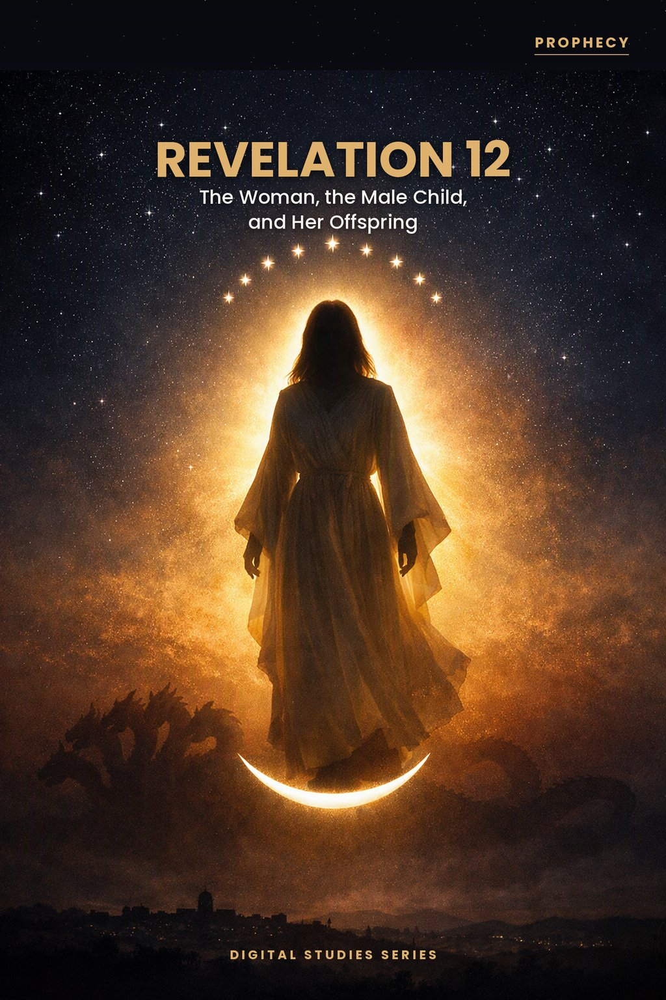
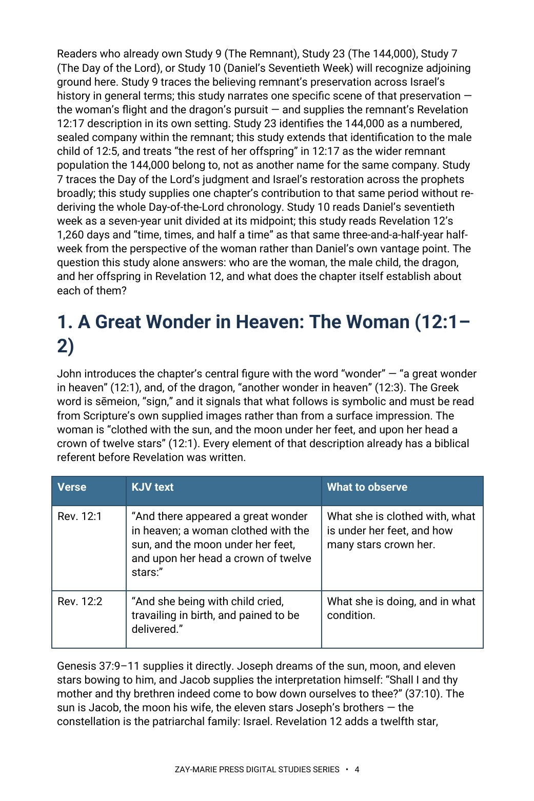

Revelation 12
The Woman, the Male Child, and Her Offspring
Who are the woman, the dragon, the male child, and her offspring — and what does the chapter itself say?
Revelation 12 answers its own questions if it is read as one continuous sign rather than a set of detachable symbols. The woman’s sun, moon, and twelve stars; the dragon’s ten horns; the male child’s rod of iron — each image already has a biblical referent before John reuses it.
This study follows the chapter’s own textual markers through the war in heaven, the dragon’s pursuit of the woman, and his war against her offspring, closing with the same discipline it opens with: identify from the text, not from an assumption carried in from elsewhere.
Read the Chapter as One Continuous Sign
You will read Revelation 12 as one continuous sign rather than a set of detachable symbols. You will identify the woman, the dragon, and the male child from the images John himself supplies — the sun, moon, and twelve stars; the seven heads and ten horns; the rod of iron from Psalm 2 — and you will follow the narrative through the war in heaven, the dragon’s fall, and his pursuit of the woman into the wilderness. You will close by identifying “the rest of her offspring” in verse 17 with the same discipline: from the passage’s own wording and its place in Israel’s Prophecy Program, not from an assumption carried in from elsewhere.
Readers who already own Study 9 (The Remnant), Study 23 (The 144,000), Study 7 (The Day of the Lord), or Study 10 (Daniel’s Seventieth Week) will recognize adjoining ground here. Study 9 traces the believing remnant’s preservation across Israel’s history in general terms; this study narrates one specific scene of that preservation — the woman’s flight and the dragon’s pursuit — and supplies the remnant’s Revelation 12:17 description in its own setting. Study 23 identifies the 144,000 as a numbered, sealed company within the remnant; this study extends that identification to the male child of 12:5, and treats “the rest of her offspring” in 12:17 as the wider remnant population the 144,000 belong to, not as another name for the same company. Study 7 traces the Day of the Lord’s judgment and Israel’s restoration across the prophets broadly; this study supplies one chapter’s contribution to that same period without re-deriving the whole Day-of-the-Lord chronology. Study 10 reads Daniel’s seventieth week as a seven-year unit divided at its midpoint; this study reads Revelation 12’s 1,260 days and “time, times, and half a time” as that same three-and-a-half-year half-week from the perspective of the woman rather than Daniel’s own vantage point. The question this study alone answers: who are the woman, the male child, the dragon, and her offspring in Revelation 12, and what does the chapter itself establish about each of them?
How These Studies Relate
Study 61 identifies every figure in Revelation 12 from the chapter’s own textual markers. These studies establish the wider companies and periods that this chapter’s figures belong to.
Study 23 — The 144,000 Identify Revelation’s numbered, sealed Israelite company directly; Study 61 traces that same company’s appearance as the male child of 12:5.
Study 9 — The Remnant Follow Israel’s believing remnant across its whole history; Study 61 narrates one Tribulation-era scene of that same preservation.
Study 10 — Daniel’s Seventieth Week Establish the seventieth week’s seven-year structure and midpoint; Study 61 reads Revelation 12’s 1,260 days from the woman’s own vantage point within that same half-week.
Trace Each Figure From the Text Itself
The Woman’s Background
Identify the woman of Revelation 12:1–2 from her own Old Testament background, not from a later doctrinal assumption.
The Dragon Named
Trace the dragon’s identity and aim across verses 3–4 and confirm it from Revelation 12:9’s own naming.
The Male Child
Trace the identity of the male child in 12:5 by following the chapter’s own textual markers — including the term “caught up” (harpazō) and the later appearance of a sealed firstfruits company in Revelation 14:1–5.
One Period, Two Measures
Distinguish the two time-measures of the woman’s wilderness protection (1,260 days; time, times, and half a time) as one period, not two.
Three Sequential Conflicts
Read the war in heaven (12:7–9) as a distinct movement from the dragon’s later war against the woman’s offspring.
Her Offspring
Identify “the rest of her offspring” in 12:17 correctly — who they are and, as important, who they are not.
Read the Word in Its Context
Genesis 37:9–11
Joseph’s dream: sun, moon, and eleven stars bow to him — the pattern Revelation 12 reuses for Israel.
Revelation 14:1–5
The 144,000 standing with the Lamb, “firstfruits unto God” — the male child’s company reappearing.
Isaiah 66:7–8
Zion “brought forth her children” before travail — the woman-in-labor picture applied to the nation.
Psalm 2:7–9
“Thou shalt break them with a rod of iron” — the phrase Revelation 12:5 quotes for the male child.
Daniel 7:7, 24
Ten horns on a fourth beast — the same horn-count Revelation 12:3 gives the dragon.
Revelation 12:9
“That old serpent, called the Devil, and Satan” — the dragon’s identity stated in the text itself.
Revelation 12:17
“The rest of her offspring, which keep the commandments of God, and have the testimony of Jesus Christ.”
Daniel 12:1, 7
A time of unequalled trouble measured at “a time, times, and an half” — the same period as Revelation 12:14.
The Text Names Its Own Answers
The chapter never asks the reader to guess.
It names the dragon in its own next breath, quotes Psalm 2 for the child, and borrows Genesis before it borrows anything else. A reading that reaches past those three anchors to find the Church in the woman has left the text to import its answer.
Preview the Study Before You Purchase
Click any page to enlarge it for reading.



A Great Wonder in Heaven
Read the opening identification before the chapter’s later scenes.
A Focused Study of Revelation’s Vision
14-Page Digital PDF
Approved cover and 13-page numbered interior.
8 Teaching Sections
A text-driven study through Revelation 12’s continuous vision.
Callout Boxes
NOTE and KEY DISTINCTION boxes highlighting each identification.
KJV Tables and Summary Table
Four KJV tables for the chapter’s key verses, plus the four identifications and their textual basis in one table.
Scripture-Tracing Exercise
Six guided passages tracing the woman, the child, and the appointed period.
Guided Further Study
Five passage groups for deeper background reading.
Review Questions
Six questions testing the chapter’s own textual markers.
Final Synthesis Exercise
A written synthesis drawing the whole study together.
Revelation 12
14-page digital PDF · For personal use